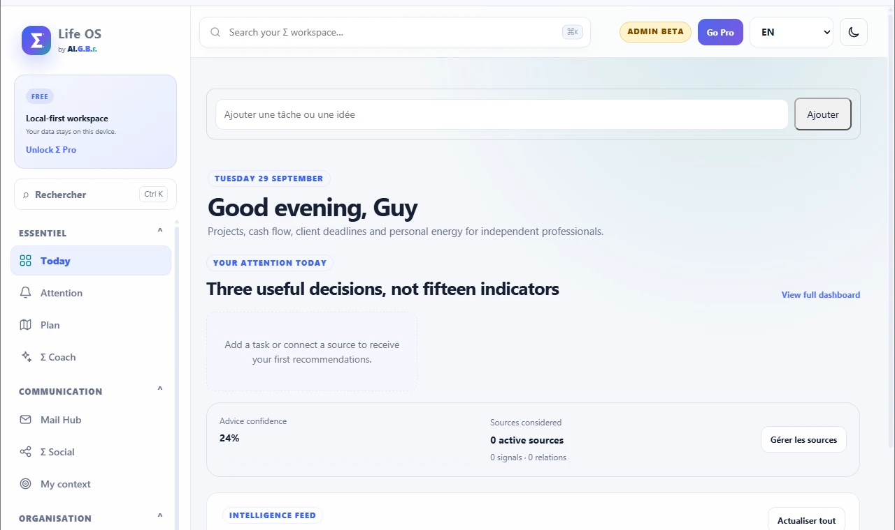
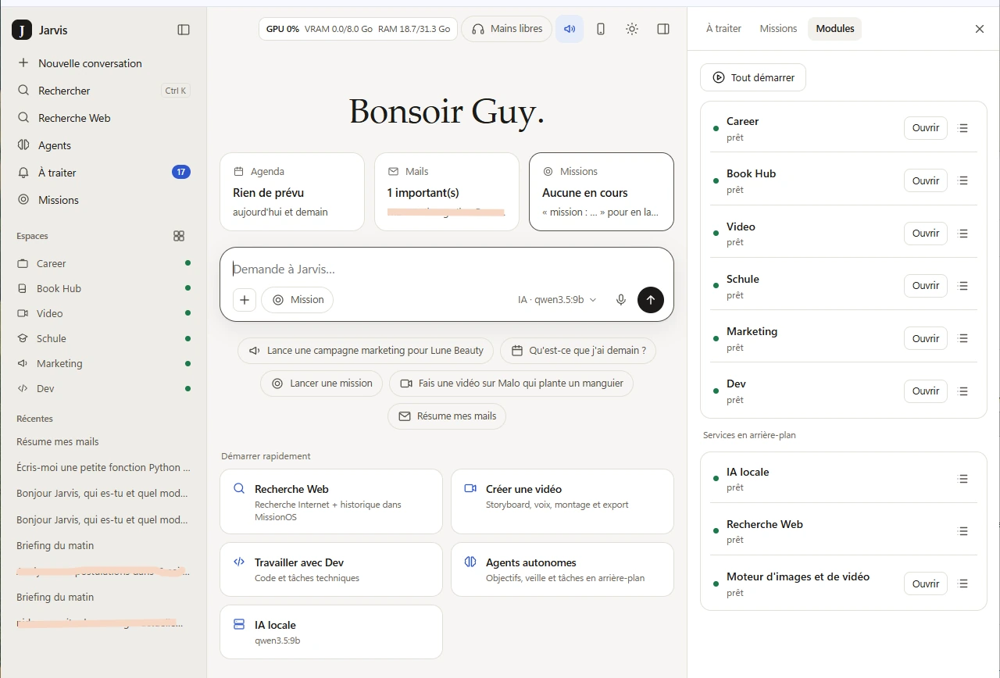

PERSONAL AI SYSTEM · PUBLIC LIFE OS
From signal to decision.From decision to action.
Σ Life OS and MissionOS / Jarvis form a two-layer local-first architecture. Life OS turns fragmented context into priorities and makes the reasoning visible. MissionOS / Jarvis is the private execution environment where local models, modules and agents carry those priorities into work.


A decision layer for fragmented context.
Life OS consolidates relevant context, separates signal from noise and makes the rationale behind priorities explicit. Its role is deliberately narrow: clarify what deserves attention next.
A private environment for execution.
MissionOS / Jarvis is the local operating environment. It brings on-device models, specialized workspaces, web research and agents into one interface, keeping execution close to the machine and the working context.
Separate environments. Continuous logic.
Life OS can be explored publicly; MissionOS / Jarvis remains local because execution and personal context belong there. The separation is intentional. The continuity lies in how context becomes priority and priority becomes action.
Context becomes priority. Priority becomes action.